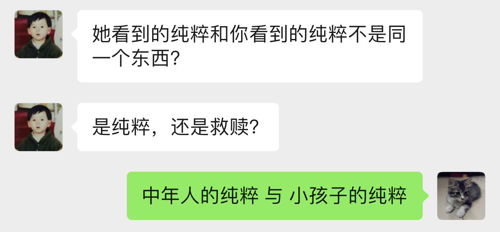

朝顔
如果你想说，那我就在听．
两个月前的今天，我在星巴克坐了一整天．把自己最软弱的一面暴露给了你，心里有一点舒适．今天我正好又想起．去中华广场那天，我在星巴克在你背后偷看了半分钟，发现你没发现我．那个时候觉得你好小只，俯着腰，既像蜷缩着而实际上又不是．不过其实我真的没看到你抱着包包，只是以为你一直放在桌子上．
那天陪你去看病的时候你说，遇到不开心的事情喜欢去医院呆呆看看，回来之后就会觉得那些不开心不愉快对于生老病死来说可能都不是事．以前我有时也会这么想．
之前跟你说，我喜欢偷窥别人生活，那个时候开始可能更多的是看别人好的地方．以前心情不好的时候我喜欢坐在操场上，或者一个人漫无目的地到处走，看别人嘻嘻哈哈，心里就会想，为什么他们可以，而我不可以呢．
知道你收到第一份面试通知，心里很替你高兴，虽然现在不需要了．所以我表现得极其平静……想起了我的第一份面试通知就是腾讯．那个时候对自己不是十分的自信，在要去大学城签约前一度想放弃．很奇怪，三次面试苦苦得来的邀请，突然就会想放弃．我现在还记得那时面试官问过些什么，就过些什么．我现在很庆幸那时的我最终没有放弃，去过回来才会知道和明白、至少会了解一直以来的“信仰”到底是怎么一回事．之后我就不随随便便地去放弃自己争取回来的东西了．
芸芸众生，我也应该没那么差．而遇见你之后，我意识我必须变得更好．
上一次你说没事的时候，你被赶了出来……一整天在想的是，是不是你爸看了信之后又生气了又对你怎样，还是没看信，像你上次说的一样，只是喝了酒又再指责你还是什么．不过至少上次后来你有和我说．我只能默默的陪伴．

从上次躺在那里跟你打电话，大概10多天了．第二次躺在这里．不是蘑菇亭．
昨晚下了一点雨，不过我没有回去，还是跟往常一样看大妈们跳舞，小孩子玩耍．我不喜欢吵闹，或者说，不想在不想看别人吵闹的时候感受到吵闹（我要求真多）……除了你，我比较少跟别人说话．所以，这样一个下着毛毛雨的晚上，看着大家还不走，这种吵闹是个好的陪伴．除了小孩子的尖叫声，的确一点大声之外．
上一次能感受到雨打在身上，已经是第二次去找你的时候了．那天急得我直想召唤你下来．
自从搬了之后，一次也没听到蝉叫了，虽然周边其实也有不少树．可能蝉也会挑树．也可能它们都求偶成功了．
前晚你说起让我找CEO聊聊，我今天才察觉到，没遇到他以前，我就是不自信甚至自卑的我．我从没见过他非常忧心忡忡，不管公司处于什么环境下．也几乎没见过他生过气．难怪他能穿着拖鞋来和我们一起打闹，然后跟我们说：我年年都是25岁．虽然至今不知道他是经过多少事才历练出来的淡定，遇到他之后，大概我也慢慢成为了乐天派的一员．只是现在的这种想法，没有被认可，或我自己没（法/能）向别人证明．
想起30号那天晚上送你回酒店，我说了一些话，让你觉得不是非常愉快，也怀疑自己是否能做到．我想说，谢谢，曾经，你做到了．
分后刚好一个星期了．短短7天，却那么漫长．
眼睛睁开的时候，大脑刚恢复过来．一切画面没有停留在7天前的分手上．而是分手前两天的周末和它的上一个周末．从我跑下去接你，到看到你在擦眼镜，到在你背后推着你往屋里走，……，到我说“刚刚有人说：干啥啥不行”，到我说“这就是那间面包店”，……，到你说“这个可能你会觉得有点咸”，到你说“要多点尝试新的，可能会有惊喜发现”，到你说“要多点带我去”，到你说“刚刚怎样没有发现这里也有一家米线”……
一帧一帧，如些清晰．不是我刻意去想，而是它就在那里．
中间我说过，那时不太想让你上来．因为这里实在太破了．我不想让你认为，如果有天跟了我，你就这得过这种日子．我一个人的时候什么都没所谓，但两个人就必须（一同）拥抱美好．
不管是何种目的，无法一起变好的时候，那就独自变好，努力让你看到还是最初的我，而不是逐渐模糊的身影．
听说你也状态不在的时候，我也心疼．没法在眼前摸摸你的头，抱抱你，只能隔空给你一个拥抱．你是我见过最阳光的人（尽管你不承认，但你身上有一种东西别人没有），要好好的．
一定要没事！
见过太多的黑暗，却不能拥抱光明．
池塘的花开了，虽然不知道是荷花还是莲花．也想你偶尔会停止匆匆的脚步，看一下世间的美好．
志当存高远，谨慎眼前步．
这几天都头晕晕，有吃饭，只是突然一静下来的时候，不记得说了什么，想了什么．大脑逻辑比较混乱．
不是每一个声音都有机会传达，只是想或觉得该做的时候，还是应该尝试一下．不想当个透明人．我也想得到你的谅解．
你说的话让我想起了：书足以记名姓而已．剑一人敌，不足学，学万人敌．本质来讲，还是事业心嘛．只是工作性质的区别．关键是你想选的，和你所热爱的．社会上大多的普通人都没有办法一下子能到达这个山腰的入口平台，丽华一定要好好珍惜和加油～我也相信此刻就立足于此的你，一定可以做得到．犹记得高一语文老师写在我日记本上的10个大字，送给你，也送给“我们”．
“接受现实”，现在只能以这样一种方式去和你一起变好，当然你是后浪．想说你曾经没看错人，有一天重新遇见你的时候，只想不再毫无谈资，也想让你看到更好的我．当然，最好也有我们．
不想再给你带去其它压力．至少现在先尽量过得像正常一点．剩下的那些难过，就让它自己和时间去玩耍吧．
我想起你在星巴克问我：为什么当你想向我走近的时候，我在躲开．我没有．从来没有．除了5号晚上有那么几小时，从来没有想过躲开你．
现在回想起来，曾经有让你想过会向我真的，真是我莫大的荣幸．在中华广场赤裸裸坦露一切的那天，我感觉很真实和开心．
那以后第一次回来这里，不同的是，以前每次我和你走过的时候我都会看看头顶上的红灯笼，而这一次，我自己走过的时候，它已经拆下了．
感动的事，从前不会，现在不会，以后也不会．你眼前看到的，只因你是丽华，只因是你丽华．
不想在你面前表现得那么懦弱，只是我真的难过．只有折磨眼皮到无法再睁开的时候，才能安稳入睡．从前到现在，无数次面对过“接受现实”4个字，只是这一次，是因为“你”和“我们”．不想把又你说得压力山大不对等不公平全世界，只是这一刻的情感就是这样．
有小太阳的话．
心悸．闭上眼是第一次见面的笑容．
不知道自己是不是太少发声了．
有趣的地方是，拿手机拍了下来才发现，它看到的比我看到的星星还要多．
11:00
不被信任的感觉．
两天没吃，大脑一晃一晃，留着残影的感觉．看起来，不过是手上的青筋变得更明显一些，没有太大的区别．
额头发冰，像贴了一片薄荷．
22:00
治疗
对不起，昨晚的事．结果来看，无法推搪．
最错的不是我有没有做伤害自己的事，是让自己喜欢的人担心了．
我有过想放弃治疗的想法，是的，很长，算起来可能有大半天．一整晚，就想躺在那里，装个醉鬼，直到眼睛睁不开，一切就那样吧……包括我，就那样吧．24小时后的现在，大脑依然残影常常闪过．
打电话的时候回想以前什么时候有过想死的想法．现在想起来了．高中的时候被我妈打了，出血了，回房间写了一封“遗书”，至今还在抽屉里，锁上房门的时候没有勇气带上刀．现在回想起来，也不记得是有多“大”的委屈了．只记得对即将成人的我，是一种羞辱．从那时候活下来以后，我只曾一次看回过我所写的．再之后我就觉得，下一次就算要走，我也必须交代得清清楚楚再走，跟每一个曾经存在的人，把该说的都好好写清楚认真道别再走．
我不确定昨天要死的想法持续了多久，只记得开始于从我下地铁那一瞬间．在地铁的时候我只是不停落泪．下地铁以后看到来往的车流，喧闹的人群，一瞬间觉得好吵好吵，我显得与这个世界格格不入．为什么上天给了我的又要带走！我扶在行人道的围栏上，眼泪一直流一直流：冲出去吧，很快就结束了．但没有，可能只是不敢，并没有意识到生命的重大意义．
对有些人来说百分之三四十就是他感情的全部，并不是全人生的全部．感情占个百分三四十，不知道到多少才能全部付出．我也不知道自己到达了多少这百分之三四十里面的百分之多少．只是知道，一起的时候可以为她做的越多，失去的时候自然被挖空的越多．昨晚有过想死的时候，也有想放弃治疗．今天能答应的，就是不再去“想死”，刻意也去做到．
让你担心了．
理性
闭上眼，是你温柔而坚定的眼神．
你说我太感性，而你理性得多．或许平时相处的时候是这样吧．但出问题的时候，可能我才是真正的理科男．有时候会觉得你的理由站不住脚，有时候又不喜欢你将一切都揉合在一起来讲．的确有些东西无法切分，但并不是所有．
撇去那七来讲，我不知道这20天里相处是怎样让性格、三观那些一下子上升到不可接受的地步，反而是这20天里相处的日子并不多．从3号到现在我都坚信哪怕有三有五，都不可避免受到另外的七或五的影响．但当你拿这三或五来强化理由的时候，我很难过．真的，很难过．那一晚，显得之前我们的沟通和交流一下子变得毫无意义．它们本身是有意义的，曾经它们也是好理由们，但是在这些正当理由前面，一下子变得非常黯淡．
就是这么难过，还有点生气，还是忍不住想打你电话，亲口跟你说，哪怕会被觉得态度不好，还是想跟你说．尽管你说我生气会让你怕怕的．我想让你知道，尽管你觉得我这么想不切实际：我们，只是我们的话，并没有那么“糟糕”．
分担
曾经问我，会不会因为最近的事而对我们产生影响．我的回答是，对我没有．我知道对丽华来说无可避免的会有，现在我说，也会被看成马后炮： 那时 ，我想有什么事的时候，她会跟我说．尽管她觉得不关我事，不是我力所能解决的．至少先和我说？不管我在事情是不是只是一个配角，让我们做一下“我们”？不想丽华自己一个人全背上身．
曾经让我们走近的是沟通，如果还有那时，并肩前行的也将会是沟通．
不甘？
我说过，从3号开始我有两件事要做，一是要你有选择权，一步一步也要抢回来（这么说有点恐怖，对不起）；二是要创造我们的幸福．你学会用一，来否定了我，不是你的错，我知道里面有无奈，我理解．我从不勉强你做什么事，也不怪你，哪怕分手，我也只想要一点点时间，无论是我想逆天扭转你爸的想法，还是需要时候理清你揉合在一起的理由，还是其它．我奢求的很少．
我昨晚问自己有没有不甘．可能有一点．一是迫于你爸我不得不连妥协的机会都没有，而他却可以多次信口说能妥协，但一次次又再反悔．二是3号那天，我真的无法让你走．第一次看到你的长文的时候，我没有哭，但“这就是我的命运”以及之后无数次的“我注定”的想法，让我不得不做选择，再痛苦难过也得做：丽华，你不可以这样就回去，这样就回去，所有发生的一切，都将白白地流逝．每个人流过的眼泪都变得毫无意义．虽然最终能让你“觉悟”的不是我，是你深圳的阿姨，但是，我没有后悔3号那天撕心裂肺地拉着你，哪怕你回去关机睡觉．相比昨晚的难过，我只能选择沉默，不想再说伤害你的话．
我想见到更好的丽华．
当昨天她说要走的时候，我真的很难过．我不知道我有没有过这么一种想法：这个更好的丽华，可能再也不能与我一起努力，去创造无法被抢走的幸福了，甚至便宜了可能会出现的下一个他？当我今晚挂了电话以后，突然想到这个．没有机会跟她说．等我写到这一行，这个问题我的答案依然是不知道．但是，上一段的想法，我至今丝毫未变：这快200天的日子，让我看到一个怎样的她，她一定一定可以更好．
我很难过，是的，但不甘心，有没有，有多少，除去你爸无奈的部分，我不知道．
想法
丽华总是说她自己会受其他人的影响．我看到了．尤其这20天．我想她多听其他人的意见，“参考”．但做决定或者选择的时候，既不想她将不明真相的人言语看得过重（并没有说其他人一定是错的），也不想做完决定之后，把它们当成另一种用来强化的“挡箭牌”．
开始
我想丽华答应我，以后不论什么时候，只要她爸的因素不再是百分之一百分的影响，哪怕是百分之九十九点九九九九九九九九，那个时候，能不能不要阻止或者避开我的靠近．
我不喜欢她说：反正最后结果都一样．
不管是我们的以后，还是其它的事情，我想她更勇敢一些，相比挫折，我更不想她错过．
正如我在中华广场跟她说的，我肤浅地认为，相处和沟通可能同样的重要．
学会期待，不必要等到万事俱备才敢仰望星空．
看昨天写的：上一次分手努力让你争取选择，在正佳抱住了你；这一次你学会了，然后选择了分手．
小太阳，为什么就那样消失．看着周围，只有几盏路灯，很亮，又很黑暗．人群很吵，车声很吵，头很痛．天旋地转．脑海里，感觉一切都拖着残影．你说不喜欢清明时候的我．不想说气话，不想．那我就消停点吧．
成为了你最讨厌的人，对不起．打着爱的旗号，去偏执．
我同学说过，每个人感情、事业的比例都不一样．她是30%～40%，她老公只有20%．开始很不高兴，相处下来发现，他的20%可以做到毫无保留．而她自己的40%却做不到．所以她不再介怀这件事情．她们最后仅有的这20%，就是他们相处最舒服的比例．
总把一切问题揉在一起，为什么．
总是把所有事当成自己的事，把我放局外，为什么．
总是不相信，为什么．
总是爱摇头，为什么．
总是宿命论，为什么．
像个工地佬坐在公园旁边的楼梯上，只有3级，我坐在了第3级．各种片段随机闪过，想大字躺下来，就这么死去．不被信任的感觉．旁边的人，能不能不要动我，不要管我我．还是找个安静的地方，不要麻烦人吧．这个时候还那么日本．冷笑了一下．
190天里无数次灵魂上的触摸．这么残缺不堪的我，还是不值得．
总要把喜欢揉杂得那么复杂，为什么．为什么不去自己定义．
总要把现实定义得那么复杂，为什么．为什么不去自己创造．
不被信任的感觉，为什么．
总觉得自己的选择可以解决所有问题，为什么．
不去只要相信喜欢和相处，可以解决所有问题，为什么．
说好有商有量，又不做，为什么．
你的眼神总是那么温柔而坚定，为什么．
人会变，价值观也会变，没有知道恋爱后、结婚后会不会变．今天我是不是暖男，以后是不是有上进心，担忧不来．没有办法伸手触及未来的我或他．但彼此在需要的时候拉一把，才能互相知道是不是能走到一起的人．
你的不确定，我的不确定；你的疑虑，我的疑虑；你的不自信，我的不自信；你的担忧，我的担忧；你的胡思乱想，我的胡思乱想．
你或我，都不会有结果和答案．我们才有．
😔我有点难过，难过的是你总想一下子想得一清二楚，才敢拉上我的手．而是你想清楚以前，总是有意无意回避我向你伸出的手．就是，没被完全理解，就要被否定的感觉．
我想，我们走到一起了（不但指我们正式开始了，指从我们开始靠近，你开始愿意作出改变的那天起），是不是应该共同面对，去探险、去体会、去尝试以及去生活？而不是停留在原地纠结？
和你开始以后我有两个目标，现在一个勉强达成；另一个我想和你努力，真的．
《玉子焼きとオレら》
玉子焼き做起来看着都差不多，通常不同是配料、锅、火力和手法．
居酒屋里的做得比较斯文，路边的做得比较粗犷．
有些材料放在玉子焼き里可以增加口感，但放又多了又有点花哨，变得有点不像玉子焼き．但是不是什么都不放才算得上是玉子焼き，有时又说不清．
斯斯文文的火力比较温和，切开了之后看不到一圈一圈的纹理，咬下去口感从一而终．
粗犷的不在乎焦不焦，有没有气泡，切开之后一圈一圈看着也不觉得突兀，甚至像个蛋卷（虽然它的确是个“蛋卷”）．咬下去层层断开的感觉，反而有些弹牙．
煎的时候气泡总是会有，不断地去筷子挑破，又再生成．不去挑破它，做出来可能就比较丑．但对玉子焼き来说，气泡就是个理所当然的存在．
斯斯文文的小心翼翼地把蛋皮用筷子拖过来叠起，跟叠被子一样．通常不会弄断．
粗犷的可以直接甩锅把它卷起来，断了拿锅铲压一下接起来．
有趣的地方在于，没吃过玉子焼き的人，可能不太好预测它是什么口感和味道．但只要它是玉子焼き，那它就是玉子焼き的应有味道，无论它是什么配料、锅、火力和手法做出来的．
迟发性反应……
有的人正视现实需要直面痛楚，有的人正视现实需要避开过往的伤痕．我是后者，正如我不敢再自己一个人走回7月3日的路一样．我把你带进了我过往很多很多年的走过的画面和路里．因为我确信，我们有未来，并且，哪怕我连家里的路都再也不敢再走－但我依然相信，你属于我余生的画面里，我们还会一起走．不要因为这样有压力，对我来说值得，对我（们）来说还值得努力．我想你也体会平凡的恋爱，那种甜蜜与期许．
那几片比天空还蓝的云，背后夕阳的余辉，轮船的汽油味，基围边上的依靠，身边路过的短腿大黄狗，自拍时丑丑的我们与欢笑，半推半就的拥吻，今生不会忘记．

这几天情绪和事情（感情、即将工作）一直在切换，丽华也会累了吧．抱抱．相信我，会好起来的！
现实．
我大学毕业的工资是3800，最新款iPhone 4的价格是5000，我觉得苹果手机好新奇，但我买不起，也不是不能买，而是需要存两个月钱我才能买得起．所以我不买．那时候觉得，一台手机为什么可以卖得那么贵，不就一个通信工具？现在苹果手机都出到11了，一个普通毕业生起薪视专业情况来说同样可能是3000到10000+，买最新款的苹果手机同样需要咬咬牙．一个月工资我也只能买得起两三台．我依然也觉得，一台手机为什么可以卖得那么贵．在地铁上的时候，如果看玩手机的人，会发现一节车厢大概有接近1/3的人用的是苹果手机，但最新款的苹果手机的人又占了这里面的大概1/3．这节车厢里的人有人会觉得苹果手机没有必要，也有人觉得分期、花呗可以买得起的话，当个果粉也值得体验体验，也有人觉得无所谓……我想，一车厢里的人应该足够普通了．但这车厢里的心里渴望又能眼都不眨，直接掏钱结账买最新款苹果手机的人，又有多少呢？
在广州打车来回佛山，一次大概200．一个月打个10来20次，那就是2000到4000多．这个数字可能就是坐在办公室里二三十个小时，或者在工地里搬砖一两周的价格．而在广州，一到两个人租房一个月的价格视地区浮动于600至3000．想要做到随时出门就随心打车的人，街上有多少呢？在日本，这件事情更可怕，能或愿意随时打车的人的比例就更少了．现实和平凡里，更多的人勿勿走上地铁的人？
不知道这么说有没有显得可怕……
2019年，中国每月税后可支配收入超过2万元的人数，应该至少超过1千万，这远远超过北师大抽样统计推算的70万人，差距来自于对高收入群体的抽样比例过低．
5月28日，总理在记者会上提到“有6亿人每个月的收入也就1000元”．值得注意的是，这里说的收入是在扣除掉个人所得税、私人转移支付和各种社会保险费等之外还能用于实际使用的可支配收入．（当然大部分是老人和小孩，和山区里的人）
国家统计局公布的2020年一季度居民人均可支配收入中位数，为7109元．以我国人口14亿粗略计算，排序在第7亿的人，在2020年一季度的月收入为2370元．
这就是现实．可能只是丽华没有意识到家里多有钱……
但是，我不会说风凉话．因为我也觉得两万块挺少的，说得难听一点就是，买几台手机就没了．在广州，一个月只能买到大半块厕所砖，还得视乎地区……这么听起来有点吓人，但现实里的人，依然过得好好的．（其实我不喜欢这么说，这么说有点像长辈说的：大家不都活得好好的！你跟着就行了！不过，这大概就是现实里普通人的生活．）这是社会的错，不是他们．
……不会看对方家境……但希望对方不会因为这个变得不自信……
如果这是一个标准……
如果这句话是指一个人月收入5到10万……
如果这句话指可以“哦，那明天去买咯”这样全额拿下一套房……
如果这句话是指家里不管有有什么大大中中小小的风吹草动，都可以刷刷卡而不用咬咬牙就能解决……
如果这句话是指今天上班有点不爽，要不明天我们开间咖啡馆或民宿转转风格过过“小日子”……
……
那么我现在还做不到……不过至少我不会不自信．我也不知道街上的有多少人面对“这个标准”可以很自信……
我目前唯一能做的，就是和对方努力去创造自律而自由、随心所欲的生活，并且让我们在这过程里变得更加优秀，可以拖着她的手问心无愧地说：我们努力配得上这样的生活！眼前的她，能让我看到希望和让我有信心．
不过！不是每一个人都能/有必要/可以/应该从零开始，有资源和条件，的确可以更好的利用．我支持她，也希望她可以不嫌弃我，只是目前走得慢．
如果努力过不行，钱不够多，生活不够随心，如果现实里普通人的生活实在太普通，那么我也想让她去活得更好．
不过我有点不喜欢丽华说：我大概是要靠相亲才结婚的人．幸福是需要争取的，你可以考虑现实问题，但不要被现实问题所束缚，尤其她还是一张白纸的时候．只要它们没有把你绑得一动不动，那么，不介意的话，自己（与我）努力争取一下下？
以下内容容易引起不适并可能包含个人情绪，非常不建议阅读．
尽管俗气，幸福是需要争取的．
当我听到你爸说要问我做好了照顾你跟你妈的准备没有，以及会不会因为你的幸福而放弃的时候，我还是觉得这个问法相当幼稚和让我气愤．我没有充分做好这样的准备，但我有这样的危机意识以努力的准备．如果真的来了，那我就拥抱接受．一个妄顾女儿幸福的人，拿家庭成员幸福开玩笑的人，有什么颜面问出这样的问题？剥夺别人选择的权利而强加自己的幸福思想，是不是另一种的自我感动？把妻子和女儿随时当货物踢出家门的人，跟出轨抛妻弃女，有什么区别，抑或是更恶劣一些？在我这里不管这叫“以自己的方式来爱他人”．
听到他说你违反游戏规则，我就更不高兴了．什么时候拥有自己的想法和生活变成了一场受制于他人的游戏？
你常常担心我，我想你更多站在“我们”去想．至少现在，我们还是“我们”，不是吗？没有人会一直抱着失败了怎么办去做一件事，尤其在相处的时候，总是这么想着的时候，我们还能走近吗？总是想着让对方找好后路，自己到时心里也好过一点，还会珍视眼前的对方吗？幸福是需要爱（不喜欢这个字我也没办法，我想不到别的）和创造，而不是不辜负．无论你什么时候什么原因离开我（即使你出轨），我都会哭，一是因为我性情，二是因为是你．什么庆幸早点发现之类，不过是拿来自我安慰，伤心与伤心不会因此而变得各自不同．有天你要去相亲遇到更帅更优秀，觉得我无可比拟与不值得去让你再让我变得优秀一点，那么我祝福你．但我也会哭．
至少，在一起的时候，能不能只想想或憧憬我们的未来？哪怕它现在还飘渺与模糊？
去他的天意呢，当下跟未来最重要．
我众多喜欢你的原因里面，其实还有一个，就是：你是第一个会跟我说新的一天要加油的人．这是为什么我一直把你成我的小太阳的原因之一．你的阳光不一定要来自于你的不焦虑，不自信，还可以来自于你拥有一颗一直在认真用力生活的心．
谢谢你的勇敢，丽华．
你用力抱着我的时候，好舒服，😅肉肉的．女朋友～
太古仓的大妈们在开着大大声的广播在跳交谊舞．正在播放着的是大学时候很喜欢的一首歌《哭砂》．我坐在路边的花坛边上，微风吹来，仲夏已过，听不出忧伤，只觉凉爽．
如梦初醒的感觉．两手心相贴的温度，是最温柔的催化剂，承载着一路走来的你与我的每一次交流，每一次心动，每一次犹豫，这一次勇敢的迈步，与下一次期待．我跟你的距离终于到达了零．明天醒来或许会变得一片空白，仿佛再回梦中，但记住这温度，无论走多远，我们都不会迷失．从春天来，走过夏天，迈向秋冬，未来的春夏秋冬，世间再变幻，也只想有你．
你若不离，我定不弃，请多指教．🤗